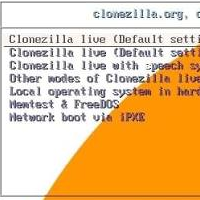

Home Page
Come cancellare la cache degli aggiornamenti di windows

Come creare una pendrive di boot con clonezilla
Come eliminare GRUB in dual boot tra ubuntu e windows
Come formattare una pendrive
Come creare una usb di boot con diskpart per installare windows senza software esterni
Come verificare l'HASH di un file